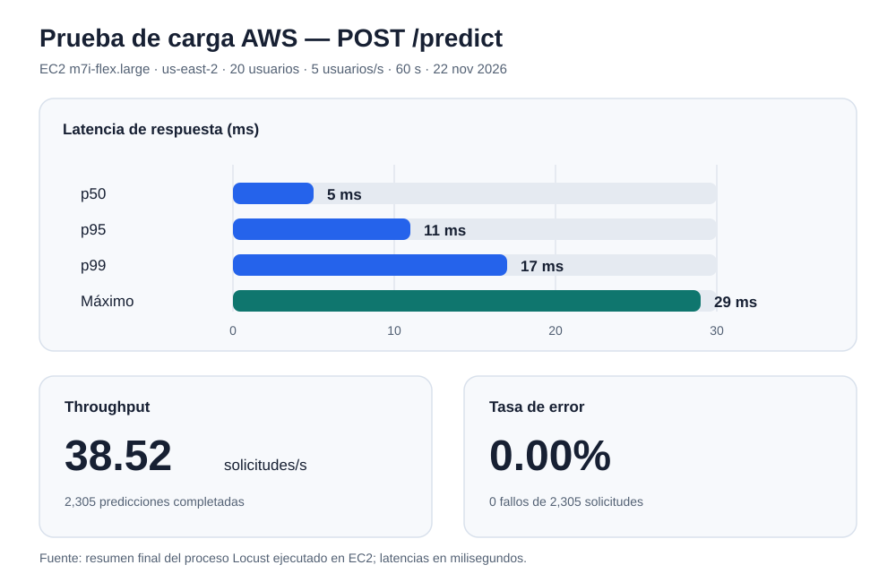
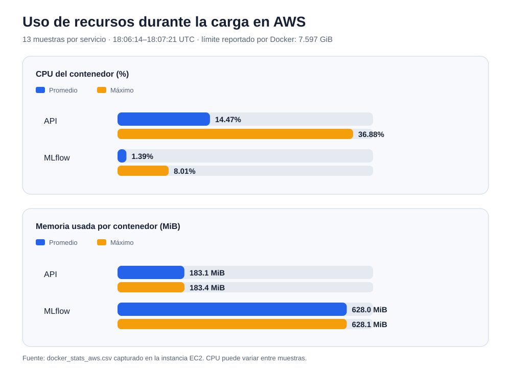

22 de noviembre de 2026 · us-east-2 · EC2 m7i-flex.large · Locust 2.47.0 · 20 usuarios · 5 usuarios/s · 60 segundos
2,305
solicitudes
0
fallos
38.52
solicitudes/s
6 ms
latencia promedio
Latencia, throughput y errores

CPU y memoria

Las métricas detalladas, supuestos FinOps y referencias de costo están en analisis_finops.md. Los artefactos originales de Locust se conservan en el bucket privado S3 del proyecto.